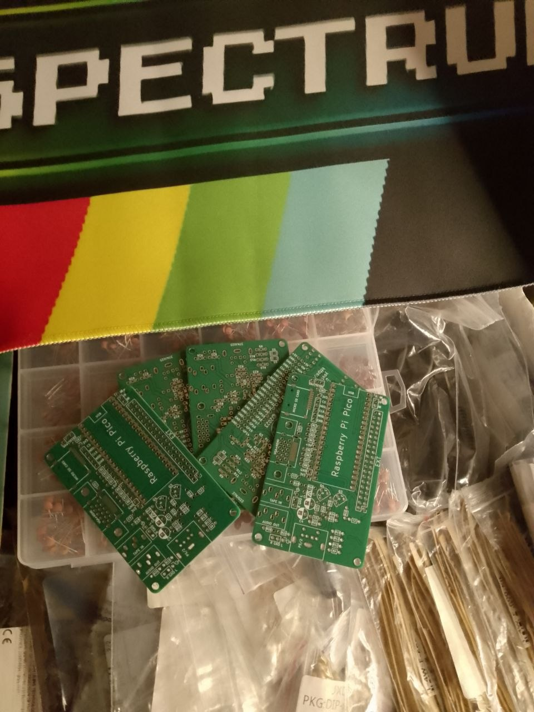

Murmulator HDMI / Type-C — це сучасна відкрита платформа для емуляції 8-бітних та 16-бітних ретро-комп'ютерів (включаючи ZX Spectrum, Atari, NES, Commodore) на базі доступного чіпа RP2040.
Даний товар постачається у вигляді **радіоконструктора (DIY набору)** для самостійної збірки. Це чудовий проект на вечір для тих, хто любить працювати паяльником та хоче отримати компактний медіа-пристрій для виведення чіткої піксельної графіки прямо на сучасний монітор або телевізор через **HDMI**.
Плата живиться через роз'єм **USB Type-C**, підтримує завантаження та збереження ігор чи образів програм із карти пам'яті MicroSD. Керування готовим емулятором здійснюється за допомогою стандартної USB-клавіатури або сумісного геймпада.
Набір містить друковану плату з чіткою маркіровкою та необхідний комплект пасивних й активних компонентів для монтажу. Нова партія конструкторів уже в дорозі.
